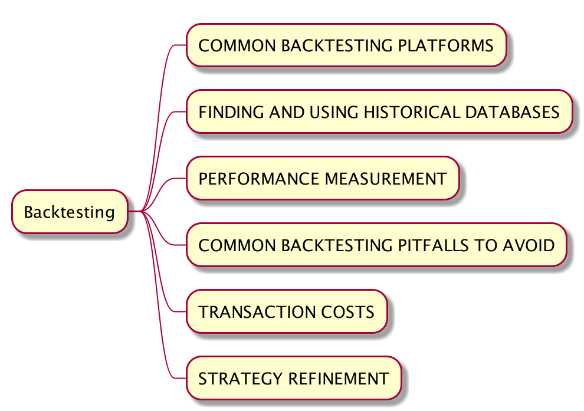

手动拆解《Quantitative Trading - How to Build Your Own Algorithmic Trading Business》（三）(上)
- Author: Damon Yuan
- Date: 2020-09-29
- 微信公众号：手动拆解《How to Build Your Own Algorithmic Trading Business》（三）(上)

第三章的基本结构如上。
这部分内容较多，分为上下两个部分。该部分为上。
第一部分 COMMON BACKTESTING PLATFORMS
主要讲回测工具与平台，
- Excel 基本的吧，
- Matlab 及其变种，
- TradeStation，贵，
- 其他高大上平台，更贵，
不能说作者用的工具都过时了，因为我不了解所以可能行业内还是很多人用 Excel 做回测吧？这里我主要用 backtrader 进行回测实现，所以这些平台有兴趣的人自己研究吧。
第二部分 FINDING AND USING HISTORICAL DATABASES
主要讲数据源。
首先关于数据质量有几个重点关注对象，
- 数据是否复权，前复权还是后复权
- 策略是否使用最高或者最低价格
- 数据是否存在幸存者偏差
这里我们会用三个免费数据源：Tushare, 富途牛牛 和 Quandl。这几个免费的数据是有幸存者偏差的，也就是说它返回的数值只包含没有退市的股票，需要手动获取停牌股票信息并处理数据。另外一个简单的处理方案是尽量使用最近的数据进行回测这样回测结果比较不会失真。或者花钱买更好的数据。。。穷，不在讨论范围（万德 和 Bloomberg）。
Tushare
主要用于获取国内各种数据。
注意日线行情是未复权行情。所以请使用通用行情接口。该接口包含了股票未复权，前复权和后复权数据。
最后， TuShare 数据包含了最高或者最低价格。
总而言之，Tushare 数据的调用比较简单，但是从 GitHub 上的 issues 数量上来看，数据质量并不是那么好。
在 backtrader 中， 我们可以将其包装在一个类中，直接返回 backtrader 可用的数据。
class TushareDataFrame:
def __init__(self, code, start, end):
self.code = code
self.start = start
self.end = end
def get_data(self):
df = ts.pro_bar(ts_code=self.code,
adj='qfq',
start_date=self.start,
end_date=self.end)
df['date'] = df['trade_date']
df['volume'] = df['vol']
df.index = pd.to_datetime(df['date'])
df['openinterest'] = 0
df = df[['open', 'high', 'low', 'close', 'volume', 'openinterest']]
return bt.feeds.PandasData(dataname=df.sort_index(),
fromdate=pd.to_datetime(self.start),
todate=pd.to_datetime(self.end))
# 在 backtrader 主函数中调用
data = TushareDataFrame(code='600000.SH',
start='20100331',
end='20200331').get_data()
cerebro.adddata(data)
数据的第一个和第二个问题都得到了解决，而针对幸存者偏差，除了上面提到的尽量使用最近的数据进行回测之外，我们还可以手动查询策略中所用到的时间范围内的退市的股票信息，
import tushare as ts
import pandas as pd
def get_delisted_stocks(self):
pro = ts.pro_api()
stocks = pro.stock_basic(exchange='', list_status='D', fields='ts_code,symbol,name,list_date,delist_date')
df = stocks[(stocks['list_date'] < self.end) & (stocks['delist_date'] > self.start)]
print(df)
这里我们得到我们回测时间范围内的所有退市股票，在策略中我们可以按需根据这些信息构建完整的历史数据。
富途牛牛
这是一家券商做的开放式接口，数据质量应该是比较有保证的。该接口不仅含有低频数据接口，同时还有高频数据接口，跟可直接连接交易系统下单。但是注意富途 API 有每月获取股票信息数量额度限制（每月只可以查询300支股票的信息），需要有其他替代接口。
import futu as ft
import pandas as pd
import backtrader as bt
class FutuDatafeed():
def __init__(self, code, start, end):
self.quote_ctx = None
self.code = code
self.start = start
self.end = end
def get_data(self):
ret, df, page_req_key = self.quote_ctx.request_history_kline(self.code,
start=self.start,
end=self.end,
ktype='K_DAY',
autype='qfq',
max_count=50)
while page_req_key != None:
ret, tmp, page_req_key = self.quote_ctx.request_history_kline(self.code,
start=self.start,
end=self.end,
ktype='K_DAY',
autype='qfq',
max_count=50,
page_req_key=page_req_key)
df = pd.concat([df, tmp])
df.index = pd.to_datetime(df['time_key'])
df['openinterest'] = 0
df = df[['open', 'high', 'low', 'close', 'volume', 'openinterest']]
print(df)
return bt.feeds.PandasData(dataname=df.sort_index(),
fromdate=pd.to_datetime(self.start),
todate=pd.to_datetime(self.end))
def __enter__(self):
self.quote_ctx = ft.OpenQuoteContext(host="127.0.0.1", port=11111)
self.quote_ctx.start()
self.quote_ctx.set_handler(ft.TickerHandlerBase())
return self
def __exit__(self, *args):
self.quote_ctx.stop()
self.quote_ctx.close()
# Add the Data Feed to Cerebro
with FutuDatafeed(code='HK.00123') as f:
data = f.get_data()
cerebro.adddata(data)
Quandl
backtrader 内置 quandl 支持，获取股票数据可以如下，
data = bt.feeds.Quandl(
dataname='AAPL',
fromdate = datetime(2017,1,1),
todate = datetime(2018,1,1),
buffered= True,
apikey="XXXXXXXX"
)
# Add the Data Feed to Cerebro
cerebro.adddata(data)
该平台对其股价计算作出明确的定义，这里为歪果仁治学严谨点个赞。
默认 adjclose=True 同时价格数据是前复权。
但是有的时候我们希望加入数据前对数据提前进行处理，这时候要是能把 datafeed 转化成 pandas dataframe就好了，可惜我没有发现这个方法。此时我们可以用另一种方法获取 quandl 数据。
quandl.ApiConfig.api_key = QUANDL_API_KEY
...
def get_data(self):
df = quandl.get('WIKI/AAPL')
df = df.rename(index={'Date': 'date'},
columns={'Open': 'open',
'Close': 'close',
'High': 'high',
'Low': 'low',
'Volume': 'volume'})
df['openinterest'] = 0
df = df[['open', 'high', 'low', 'close', 'volume', 'openinterest']]
return bt.feeds.PandasData(dataname=df.sort_index(),
fromdate=self.start,
todate=self.end)
Yahoo
差点忘记这个数据大佬，python 有一个叫 pandas-datareader 的包，用以下代码可直接返回backtrader可用的数据，
from pandas_datareader import data
import backtrader as bt
class YahooDatafeed():
def __init__(self, code, start, end):
self.code = code
self.start = start # '2018-01-01'
self.end = end # '2019-01-01'
def get_data(self):
df = data.DataReader(self.code,
start=self.start,
end=self.start,
data_source='yahoo')
df = df.rename(index={'Date': 'date'},
columns={'Open': 'open',
'Adj Close': 'close',
'High': 'high',
'Low': 'low',
'Volume': 'volume'})
df['openinterest'] = 0
print(df.head())
return bt.feeds.PandasData(dataname=df.sort_index(),
fromdate=self.start,
todate=self.end)
第三部分 PERFORMANCE MEASUREMENT
回测结果分析指标。上一章介绍了两个最终要的指标：夏普率和最大回撤（时间和幅度）。鉴于 backtrader 已经实现了这两个参数，这里就不在累赘，直接拿来用即可。有兴趣的话可以参考源代码。
这部分作者有提到一个是否需要在 strategy return 中减去 risk-free rate 来作为计算 Sharpe Ratio 的 excess return 的细节问题。作者认为 dollar-neutral portfolio, 比如 long-short strategy，和日内交易都不需要，因为这些种类的交易都没有带来融资成本。
同时在计算 long-short strategy return 时候，要注意除以2，因为这时候你有双倍的资金（注意 backtrader Sharpe Ratio 计算 代码中并看不出来有没有除以2，如有需要请自行验证）。
第四部分 COMMON BACKTESTING PITFALLS TO AVOID
这部分主要介绍了回测容易发生的几大问题。
Look-ahead bias
解决方法是只用前一个休市之前的数据来计算当前策略因子（当然如果你只在休市时候交易，那也可以用当天的数据）。
统计上的验证方法是，删去最近 N 天的数据来计算 position file B, 并与现在的 position file A 做比较，如果 T - N 天前的仓位数据是完全一样的，那说明没有 look-ahead bias, 否则你很有可能用了 T - N 天 内的数据来影响 position file A 中 T - N 天前的仓位数据。
过分耦合 Data-snooping bias
诀窍是不在策略中引进过多的参数（作者说他自己不会引进多余 5 个的参数）。其他一些手段包括
保证样本数量足够大
对 tick 单位为每日的交易来说 n = 252 x number of free parameters；对 tick 单位为每分钟的交易来说 n = （252 / trading hours per day / 60）x number of free parameters
样品外测试
其实交易策略的过程和机器学习十分相似，都可以分为，
- 收集数据
- 数据清洗
- 数据分析
- 训练模型
- 测试
- 使用
其中 1 和 2 数据源和量化工具已经帮我们做好了，第 3 步就是交易策略，第 4 步属于根据现有真实数据调节参数以达到收益目标，第 5 步也需要根据现有真实数据来验证策略是不是有效，验证成功后第 6 步才是应用于真实的交易环境中。
这里我们可以看到 4 和 5 都用到了真实数据，那么怎么可以保证训练用数据和测试用数据能够相互独立不会因为过拟合导致测试失效呢？作者提出的简单的方法是把数据分成两份，然后一份用作训练，一份用作测试。Paper trading 就是一种既可以完成真正的样本外测试，又可以让你发现各式各样运行问题的一种交易方法，这个方法会在第五章进行详细阐述。
同时如果你在测试一个从公开刊物发表的策略，从文章发表时间到现在这段时间的数据绝对是样本外数据，是可以放心使用的。
另外一个方法是使用 parameterless trading framework, 来在移动持仓窗口（moving lookback window）中动态的优化参数。这个时候利润帽（profit cap）也会由模型本身决定而不会是一个输入的参数。这块作者在本书中没有详细阐述，有兴趣的人可以查找相关资料学习。